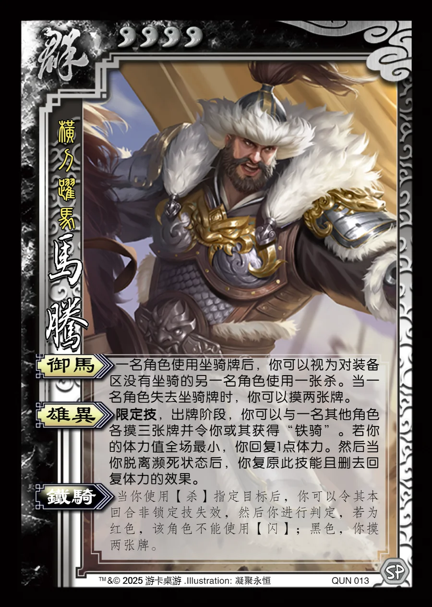

点击卡面查看大图
群
马腾
♥4横刀跃马
御马
一名角色使用坐骑牌后，你可以视为对装备区没有坐骑的另一名角色使用一张杀。当一名角色失去坐骑牌时，你可以摸两张牌。
雄异限定技
限定技，出牌阶段，你可以与一名其他角色各摸三张牌并令你或其获得“铁骑”。若你的体力值全场最小，你回复1点体力。然后当你脱离濒死状态后，你复原此技能且删去回复体力的效果。
铁骑衍生
当你使用【杀】指定目标后，你可以令其本回合非锁定技失效，然后你进行判定，若为红色，该角色不能使用【闪】；黑色，你摸两张牌。